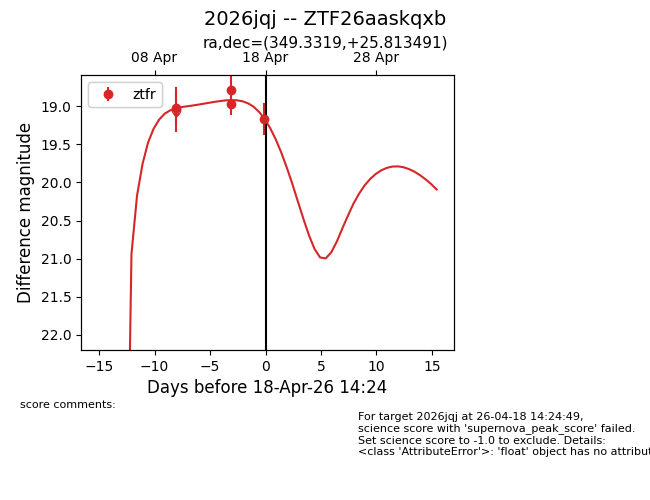
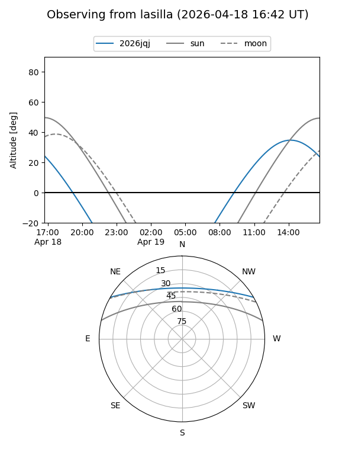
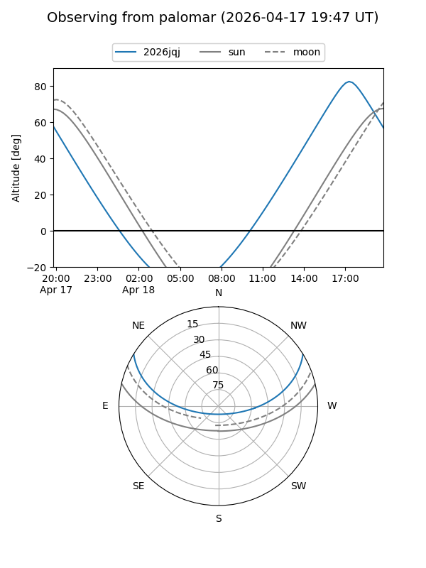
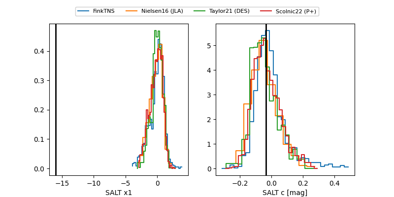

2026jqj
Target 2026jqj at 2026-04-18 14:30
Aliases and brokers:
FINK: link
Lasair: link
ALeRCE: link
TNS: link
YSE: link
alt names
ZTF26aaskqxb (ztf,fink_ztf)
2026jqj (tns,yse)
Coordinates:
equatorial (ra, dec) = 349.3319,+25.81349
equatorial (HMS+DMS) = 23:17:19.65,+25:48:48.57
galactic (l, b) = (97.7384,-32.41330)
Flags:
Photometry:
last ztfr=19.16
4 ztfr detections
Lightcurve

Visibility


Additional plots
